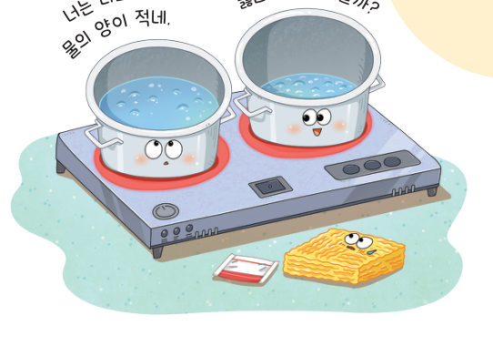
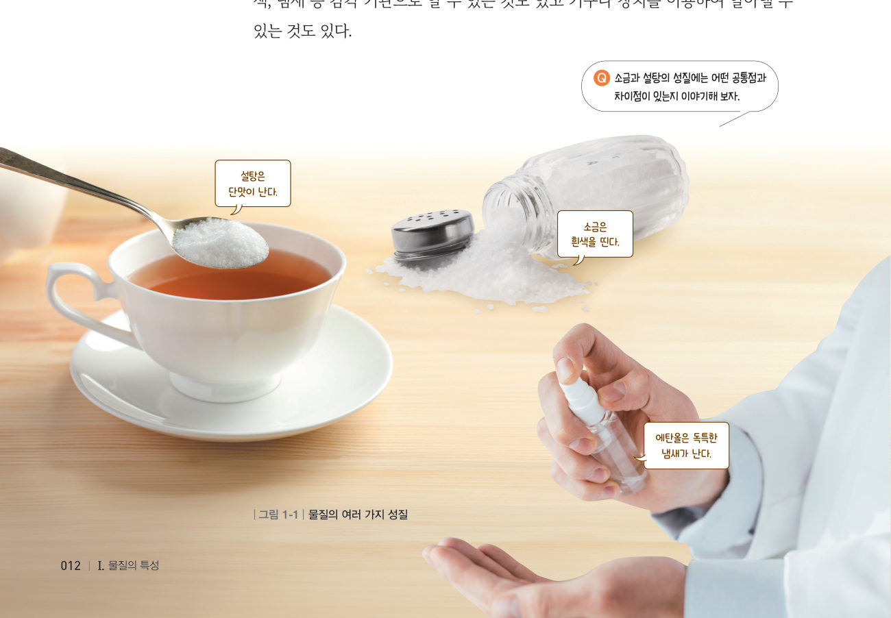
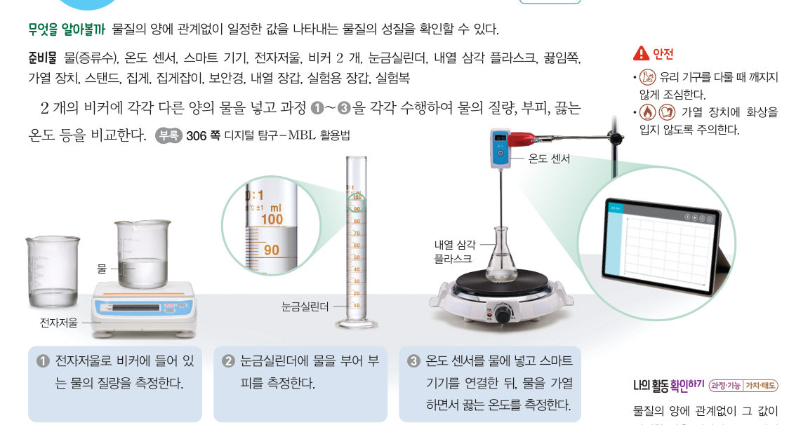

살아있는 교과서 · Ⅰ. 물질의 특성 · 1. 물질의 특성 · 01 11~13쪽
물질의
물질의
고유한 성질
“너는 나보다 물의 양이 적네. 물의 양이 적으면 끓는 온도가 낮을까?” 물의 양에 따라 물이 끓는 온도는 달라질까? 가상 실험실에서 양이 다른 물을 가열하며 질량, 부피, 끓는 온도를 비교해 보자.
🎯 이 단원을 배우면 — 물질의 특성의 의미를 알 수 있다.
단원 열기1. 물질의 특성 11쪽
감자에서 얻을 수 있는 녹말은 밀가루처럼 하얗고 냄새도 나지 않아. 녹말을 손으로 만져 보면 부드러워.
첫 번째 블록
녹말에는 어떤 성질이 있을까?
‘물질의 고유한 성질’(12쪽), ‘물질이 뜨고 가라앉는 성질’(14쪽), ‘물질이 녹는 정도’(16쪽), ‘물질의 상태가 변하는 온도’(20쪽)를 모으면 밀도, 용해도, 녹는점, 끓는점 등과 같은 물질의 특성을 알아내어 답할 수 있어요. 🧩
✔이 단원과 관련해 이미 알고 있는 것을 모두 골라 보자.
교과서물질의 여러 가지 성질 12쪽
물질의 특성이란 무엇일까?
우리 주변에는 다양한 물질이 있다. 이러한 물질의 성질에는 그림 1-1과 같이 맛, 색, 냄새 등 감각 기관으로 알 수 있는 것도 있고 기구나 장치를 이용하여 알아낼 수 있는 것도 있다.

💬소금과 설탕의 성질에는 어떤 공통점과 차이점이 있는지 이야기해 보자.
해 보기물질의 양에 따른 성질 비교하기 13쪽

⚠️ 유리 기구를 다룰 때 깨지지 않게 조심하고, 가열 장치에 화상을 입지 않도록 주의한다.
가상 실험양이 다른 물 가열하기
두 비커에 넣을 물의 양을 정하고 [가열 시작]을 눌러 보자. 같은 세기의 불로 가열하며 온도 센서 그래프를 지켜보자. 끓기 시작하면 기록표에 질량, 부피, 끓기까지 걸린 시간, 끓는 온도가 적혀요.
1물의 양을 달리했을 때 그 값이 일정한 것을 모두 골라 보자.
교과서물질의 특성 13쪽
압력이 같을 때 물이 끓는 온도는 물의 양에 관계없이 일정한 값을 나타낸다. 이처럼 특정한 조건에서 항상 일정한 값을 가지고 물질의 양에 따라 달라지지 않는 고유한 성질을 물질의 특성이라고 한다. 물질의 특성을 이용하면 물질을 구분할 수 있고 모르는 물질이 무엇인지 알아낼 수도 있다.
분류 게임물질의 특성일까, 아닐까?
물질의 양을 바꾸어도 같은 물질이면 똑같은 값이 나오는지 생각해 보자.
스스로 확인하기12쪽 학습 목표를 달성했는지 확인해 보자 13쪽
1개념 확인 특정한 조건에서 항상 일정한 값을 가지고 물질의 양에 따라 달라지지 않는 고유한 성질을 물질의 ( )(이)라고 한다.
2사고력 물 50 g과 100 g을 각각 같은 세기의 불로 가열할 때 물이 끓기까지 걸리는 시간과 물이 끓는 온도를 비교하여 설명해 보자.
5분 테스트물질의 고유한 성질
1물질의 여러 가지 성질 중 그 물질만이 나타내는 고유한 성질을 이라고 한다.
| ② 설탕과 소금을 맛을 보아 구분할 수 있다. | |
| ③ 식초와 에탄올은 냄새를 맡아 구분할 수 있다. | |
| ④ 물질의 특성은 물질의 양에 따라 달라진다. | |
| ⑤ 물질의 특성을 이용하면 물질을 구분할 수 있다. |
2⑥ 다음 중 물질의 특성인 것을 모두 고르시오.
⑦ 양이 다른 두 물에 대해 (가) 질량, (나) 부피, (다) 끓는 온도를 측정했다. 측정한 값이 같은 과정을 모두 고르면
스스로 정리하기물질의 특성 24쪽
1물질의 특성
⑴ 물질의 : 특정한 조건에서 항상 일정한 값을 가지고 물질의 양에 따라 달라지지 않는 고유한 성질
⑵ 을/를 이용하면 물질을 구분할 수 있고, 모르는 물질이 무엇인지 알아낼 수도 있다.
⑵ 을/를 이용하면 물질을 구분할 수 있고, 모르는 물질이 무엇인지 알아낼 수도 있다.
제출학생 정보 · 제출하기
모든 활동을 마친 뒤 제출하면 전체가 한 번에 채점되고 피드백이 나타나요. 답안은 선생님 스프레드시트(중2 탭)에 기록돼요.